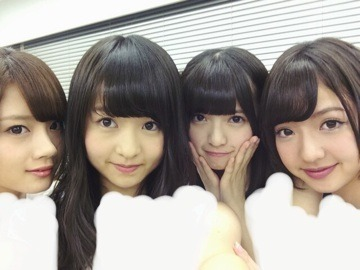

| 2014/06 27 Fri | くしゃくしゃぽい。 580回目 |
若月お誕生日おめでとう！
私は若月の頭の回転の
はやさが欲しい。
あと、いつまでも黒髪でいてほしい←
そして、舞台で
演技してる若月が好きです。
素敵な1年になりますように！
第37回パールボウルのハーフタイムで
ロマンスのスタート
夏のFree＆Easy
の2曲を披露させていただきました！
来てくださったファンのみなさん
ありがとうございました。
出演することを事前に
伝えていなかったので申し訳ないです。
東京ドームの真ん中で
のびのびと踊れて幸せでした！
チアリーダーのみなさん
ありがとうございました！
あと、いろいろ
お仕事させていただいています。
そんな中明日から
アンダーライブが始まる。
まずは、土日4公演。
よろしくお願いします。
なんと、今回はグッズまでできました！
有難い。あのTシャツは
ジャケ写でみんな着てたやつだから、
ぜひおそろいにしましょう。
ちなみに私は紫です。

ライブは、詰め込み過ぎなくらい
内容が盛りだくさんだよ。
メンバーに向けてのコールは
いつもより大きな声でよろしくっ
おもっきり楽しもう！

この前この4にんで
仕事の合間にインドカレー
食べたんだけど美味しかった。
不思議なことに
食べたその日家に帰ったら、
お母さんがインドカレー作ってたの。
カルディに売ってるやつ。
甘口食べたけど、独特な味で
美味しかった。
自分が食べたいとか食べたものを
その日にお母さんが
作ってることが多い。
たまたまだろうけど、不思議〜
一時期伊藤家は
モロッコ料理にハマってて
タジン鍋よく食べてたんだけど、
最近はない...
食べたい。
エスニック料理食べたい。
ひよこ豆をペーストにして
パンに塗って食べたい。
あれだいすき。
食べ物の話ばかりになりましたが、
アンダーライブ気合十分です！
がんばります！！
よろしくお願いします。
まりか
コメント(550)
2014/06/27 23:42